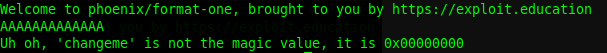
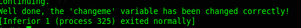

Esta prueba muestra la vulnerabilidad que puede haber en cadenas de caracteres que no estan bien definidas y como se pueden modificar.
Nota importante: Cada vez que hago esto, coloco intrucciones a gdb que creo son muy necesarios, ya que cada que el debugger abre una aplicación, lo hace en un espacio de memoria relativa y al colocarle, unset env LINES y unset env COLUMNS, GDB muestra el uso de memoria real o muy cercano al que usa realmente la aplicación, facilitando la explotación de la vulnerabilidad.
Hay una vulnerabilidad en el código, se puede modificar un printf que no esta definido con el tipo de formato cadena (format string).
Ejecutamos la aplicación para ver que hace.
Vamos mostrando los push de los printf y encontramos los mensajes de cada uno, y encontramos algo de interes.
Como se puede ver hay una comparativa de test eax, eax, seguido de un jump if not equal, lo que significa que no saltará a una instrucción diferente si no es igual, provocando un mensaje de error, ya que está establecido que si superaba el buffer de 16, "0x10", entonces no continuará su ejecución, pero ese buffer no es el que buscamos, así que seguimos buscando hasta encontrar lo que sería la parte que necesitamos.
Hay un cmp eax, 0x45764f6c, justo despues de la llamada de sprintf, y que llega al mensaje deseado. Vamos a ver que pasa si lo modificamos.

Perfecto, logramos el objetivo, pero... ¿como lo haríamos en ejecucíón?.

Pues no esta pisando la pila como debería de ser. Veamos que pasa si llenamos el buffer como está establecido 32 bytes.
Pues claro, sprintf esta convirtiendo los hex en versión ascii, así que hagamos algo al respecto.
Muy bien, logramos el objetivo, pero antes de terminar veamos como se ven los registros ahora.
Listo.